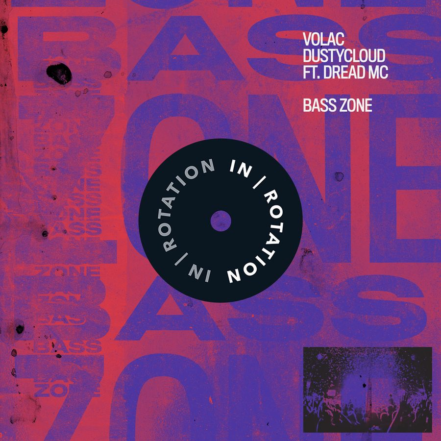

Volac and Dustycloud Forge a France-Russian Alliance With G-House Flavored “Bass Zone” for IN / ROTATION


The last time we heard from Russian duo Volac, it was via the slamming IN / ROTATION collaboration “Nimble Like Jack,” which hit the spot so much that they were invited back by the label to do it all over again. While they previously teamed up with Brazilian bass specialist rrotik, this time, it’s French renegade Dustycloud who’s joining for the G-house cause on “Bass Zone.”
“For a long time, we’ve wanted to make a collaboration with Dustycloud,” the Volac boys told us. “At first, we sent him our idea; then he changed some parts, added some bass parts, and sent it back. The drop was sick, but the breakdown without a vocal was not so cool. Then, we got an idea to ask our friend Dread MC to rap on it! He agreed, and we finished this bomb.”
Indeed, the swag-heavy rap from Dread MC takes a great track and finds a way to make it even better. The end product is packaged with rollicking energy and some tremendously bass-loaded grooves—plus, a liberal dose of G-house for some extra ‘tude. To mark its release on IN / ROTATION, we got the team together to tell us more.
Volac & Dustycloud’s “Bass Zone” is available here.
Volac, the last time we spoke with you guys was at the beginning of the year, for another collaborative release on IN / ROTATION. How has your year played out since?
Volac: This year was sick. We were in many countries: Brazil, USA, Canada, and Australia. Also, we played at EDC Las Vegas; it was the best festival of our lives. We actually played twice, on two different stages, and it was awesome! Our recent single “Like Dis” also hit the spot for us this year—it’s our most popular track so far. The next heat will be “Bass Zone” for sure, ha!
Dustycloud, you’ve got a similarly bass-heavy focus in your sound, though you’re a touch darker in your approach. Tell us a bit about your journey so far.
Dustycloud: I just recently left France to tour America for the first time. It’s been really exciting, and the love I’ve received so far has been awesome. I had the opportunity to play Nocturnal Wonderland a few days after I arrived, and it’s been a ride ever since.
You’ve combined powers with Volac for your new IN / ROTATION single. What brought you guys together, and what’s the story behind this track?
Dustycloud: Volac first hit me up on Instagram, I think, and they sent me an idea that I really liked. We sent a few versions back and forth over a month or two, and after getting MC Dread’s vocals, we ended up with “Bass Zone.”
There’s a nice G-house vibe going on, alongside some tremendously bassy grooves. How did your respective sounds come together in the studio?
Volac: This is just the magic of sound engineering, correct sound balance, and it’s done! Ha.
Dustycloud: Volac are really great producers, with a sound that’s full of energy. I just tried to bring them over to the dark side a little.
What’s up next for the Volac boys?
Volac: That’s a good question! We’re gonna release our new two-track Funky EP on Night Bass in December. Around that time, we’re embarking on a US tour, which we’ve titled Dis Tour Is Kinda FUNKY! We’re really excited about that.
What’s on the horizon for Dustycloud?
Dustycloud: I have an EP dropping on the Deadbeats label at the start of 2019, and then I’ll be back in early 2019 for my second tour in the USA.
Follow Volac on Facebook | Twitter | SoundCloud
Follow Dustycloud on Facebook | Twitter | SoundCloud
Follow IN / ROTATION on Facebook | Twitter | SoundCloud